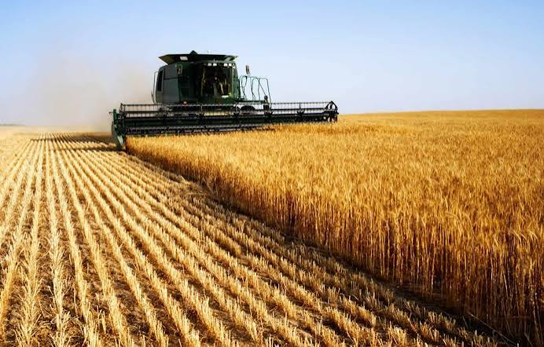
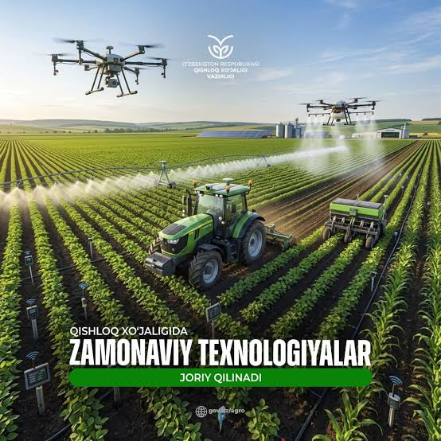
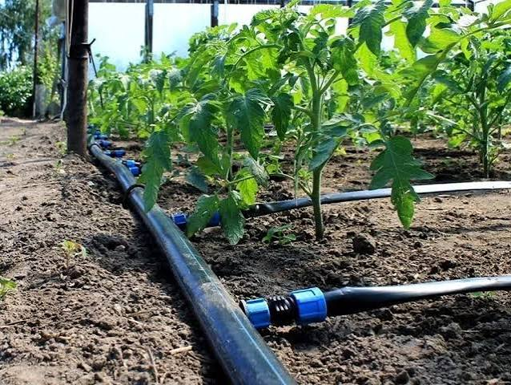

Qishloq xo‘jaligi — barqaror kelajak va oziq-ovqat xavfsizligi garovidir
O‘zbekiston zaminida dehqonchilik va bog‘dorchilik qadimdan shakllangan boy tajribaga ega. Quyoshli iqlim, zamonaviy agrotexnologiyalar va tomchilatib sug‘orish usullari orqali yuqori hosildorlik ta'minlanmoqda.

1-chi rasm
Ekin maydonlari va tabiat uyg‘unligi
Quyoshli iqlim va unumdor tuproq sababli yetishtirilgan meva-sabzavotlar o‘zining tabiiy shirinligi va foydali vitaminlari bilan mashhurdir.

2-chi rasm
Zamonaviy texnikalar va unumdorlik
Zamonaviy traktorlar va agrotexnikalar dehqonlar mehnatini sezilarli yengillashtirib, ish samaradorligini oshiradi hamda qimmatli resurslarni tejaydi.

3-chi rasm
Innovatsion tejamkor sug‘orish tizimlari
Tomchilatib sug‘orish texnologiyalari yordamida suv resurslari 40% gacha tejaladi va har bir niholga kerakli ozuqa aniq yetkazib beriladi.